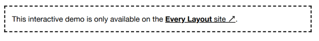

El Stack¶
El problema¶
Los elementos de flujo requieren espacio (a veces denominado espacio en blanco) para separarlos física y conceptualmente de los elementos que vienen antes y después de ellos. Este es el propósito de la propiedad margin.
Sin embargo, los sistemas de diseño conciben elementos y componentes de forma aislada. Al momento de la concepción, no está establecido si habrá contenido circundante o cuál será la naturaleza de ese contenido. Un elemento o componente probablemente aparecerá en diferentes contextos, y el requisito de espaciado diferirá.
Estamos en la costumbre de estilizar elementos, o clases de elementos, directamente: hacemos declaraciones de estilo que pertenecen a los elementos. Típicamente, esto no produce problemas, pero margin es realmente una propiedad de la relación entre dos elementos próximos. Por lo tanto, el siguiente código es problemático:
Dado que la declaración no es sensible al contexto, cualquier aplicación correcta del margen es cuestión de suerte. Si el párrafo es sucedido por otro elemento, el efecto es deseable. Pero un párrafo :last-child produce un margen redundante. Dentro de un elemento padre con padding, este margen redundante se combina con el padding del padre para producir el doble del espacio previsto. Este es solo un problema que produce este enfoque.

La solución¶
El truco está en estilizar el contexto, no el(los) elemento(s) individual(es). La primitiva de layout Stack inyecta margen entre elementos a través de su padre común:
Usando el combinador de hermano adyacente (+), margin-top solo se aplica donde el elemento está precedido por otro elemento: no hay margen "sobrante". El selector universal (o wildcard) * asegura que cualquier y todos los elementos se vean afectados. Esta construcción clave se conoce como el * + * owl ↗ (búho).
Altura de línea y escala modular¶
En el ejemplo anterior, usamos un valor margin-top de 1.5rem. Estamos en la costumbre de usar este valor porque refleja nuestra altura de línea (line-height) del texto del cuerpo (generalmente preferida) de 1.5.
El espaciado vertical de tu diseño debería basarse en tu line-height estándar porque el texto domina el layout de la mayoría de las páginas, haciendo que una línea de texto sea un denominador natural.
Si el texto del cuerpo tiene un line-height de 1.5 (es decir, 1.5 × el font-size), tiene sentido usar 1.5 como la relación para tu escala modular. Lee la introducción a la escala modular, y cómo se puede expresar con custom properties de CSS.

Recursión¶
En el ejemplo anterior, el combinador de hijo (>) asegura que los márgenes solo se apliquen a los hijos del elemento .stack. Sin embargo, es posible inyectar márgenes recursivamente eliminando este combinador del selector.
Esto puede ser útil donde quieras afectar elementos en cualquier nivel de anidamiento, manteniendo la regularidad del espacio en blanco.

En la siguiente demostración (usando el componente Stack para seguir) hay un conjunto de elementos con forma de caja. Dos de estos están anidados dentro de otro. Debido a que se aplica recursión, cada caja está espaciada uniformemente usando solo un Stack padre.

Es probable que encuentres que el modo recursivo afecta elementos no deseados. Por ejemplo, los elementos de lista genéricos que típicamente no están separados por márgenes se dispersarán inesperadamente.
Variantes anidadas¶
La recursión aplica el mismo margen sin importar la profundidad de anidamiento. Un enfoque más deliberado sería configurar Stacks no recursivos alternativos con diferentes valores de margen, y anidarlos donde sea adecuado. Considera lo siguiente:
El selector del primer bloque de declaración restablece el margen vertical para todos los elementos similares a stack (coincidiendo con valores de clase que comienzan con stack). Importantemente, solo se restablecen los márgenes verticales, porque el stack solo afecta el margen vertical, y no queremos que alcance fuera de su competencia. Puede que no necesites este restablecimiento si un restablecimiento universal para margin ya está en su lugar (ver Global and local styling).
Los siguientes dos bloques configuran Stacks alternativos, con diferentes valores de margen. Estos pueden anidarse para producir — por ejemplo — el layout de formulario ilustrado. Ten en cuenta que los elementos <label> necesitarían tener display: block aplicado para aparecer arriba de los inputs, y para que sus márgenes realmente produzcan espacios (el margen vertical de los elementos inline no tiene efecto; ver The display property).

En Every Layout, se usan custom elements para implementar componentes/primitivas de layout como el Stack. En el componente Stack, la prop (propiedad; atributo) space se usa para definir el valor de espaciado. El ejemplo de clases modificadas anterior es solo para ilustración. Ver el ejemplo anidado.
Excepciones¶
CSS funciona mejor como un lenguaje basado en excepciones. Escribes reglas de gran alcance, luego usas la cascada para anular estas reglas en casos especiales. Como está escrito en Managing Flow and Rhythm with CSS Custom Properties ↗, puedes crear excepciones por elemento dentro de un solo contexto (es decir, en el mismo nivel de anidamiento).
Observa que estamos aplicando el espaciado aumentado por encima y por debajo del elemento .stack-exception, donde sea aplicable. Si solo quisieras aumentar el espacio por encima, eliminarías .stack-exception + *.
Esto funciona porque * tiene especificidad cero, así que .stack > * + * y .stack-exception tienen la misma especificidad y .stack-exception anula en la cascada (al aparecer más abajo en la hoja de estilo).
Dividiendo el stack¶
Al hacer del Stack un contexto Flexbox, podemos darle un poder final: la capacidad de agregar un margen auto a un elemento elegido. De esta manera, podemos agrupar elementos en la parte superior e inferior del espacio vertical. Útil para componentes tipo tarjeta.
En el siguiente ejemplo, hemos elegido agrupar elementos después del segundo elemento hacia la parte inferior del espacio.
Colocación de la custom property¶
Importantemente, a pesar de que ahora establecemos algunas propiedades en el elemento padre, todavía estamos estableciendo el valor --space en los hijos, no "subiéndolo" al padre. Si el padre es donde se establece la propiedad, se anulará si el padre se convierte en hijo en anidamiento (ver Variantes anidadas, arriba).
Esto se puede ver funcionando en contexto en la siguiente demo que representa un editor de presentaciones/diapositivas. El elemento Cover a la derecha tiene una altura mínima de 66.666vh, forzando la altura de la barra lateral izquierda a ser más alta que su contenido. Esto es lo que produce el espacio entre las imágenes de las diapositivas y el botón "Add slide".
Donde el Stack es el único hijo de su padre, nada lo fuerza a estirarse como en el último ejemplo/demo. Un height de 100% asegura que la altura del Stack iguale la del padre y la división pueda ocurrir.
Casos de uso¶
El posible alcance del layout Stack difícilmente puede sobreestimarse. En cualquier lugar donde los elementos se apilen uno encima de otro, es probable que un Stack debería estar en efecto. Solo los elementos adyacentes (como las celdas de cuadrícula) no deberían estar sujetos a un Stack. Las celdas de la cuadrícula son probablemente Stacks, sin embargo, y la cuadrícula misma un miembro de un Stack.

El generador¶
La herramienta generadora de código solo está disponible en el sitio de documentación adjunto ↗. Aquí está la solución básica, con comentarios:
CSS¶
HTML¶
<div class="stack">
<div><!-- child --></div>
<div><!-- child --></div>
<div><!-- etc --></div>
</div>
El componente¶
Una implementación de custom element del Stack está disponible para descargar ↗.
Props API¶
Las siguientes props (atributos) harán que el componente se vuelva a renderizar cuando se alteren. Pueden alterarse a mano — en las herramientas de desarrollo del navegador — o como sujetos del estado de la aplicación heredada.

Ejemplos¶
Básico¶
<stack-l>
<h2><!-- algún texto --></h2>
<img src="path/to/some/image.svg" />
<p><!-- más texto --></p>
</stack-l>
Anidado¶
<stack-l space="3rem">
<h2><!-- etiqueta de encabezado --></h2>
<stack-l space="1.5rem">
<p><!-- texto del cuerpo --></p>
<p><!-- texto del cuerpo --></p>
<p><!-- texto del cuerpo --></p>
</stack-l>
<h2><!-- etiqueta de encabezado --></h2>
<stack-l space="1.5rem">
<p><!-- texto del cuerpo --></p>
<p><!-- texto del cuerpo --></p>
<p><!-- texto del cuerpo --></p>
</stack-l>
</stack-l>
Recursivo¶
<stack-l recursive>
<div><!-- hijo de primer nivel --></div>
<div><!-- hermano de primer nivel --></div>
<div>
<div><!-- hijo de segundo nivel --></div>
<div><!-- hermano de segundo nivel --></div>
</div>
</stack-l>
Semántica de lista¶
En algunos casos, los navegadores deberían interpretar el Stack como una lista para el software de lector de pantalla. Puedes usar la siguiente atribución ARIA para lograr esto.